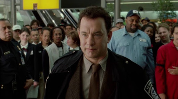

Reseña por: Soto Salas Alondra America
Viktor Navorski (Tom Hanks) ha viajado a Nueva York desde Krakozhia (país ficticio) para conseguirle a su padre un autógrafo del saxofonista Benny Golson, pero para su sorpresa, cuando aterriza en el aeropuerto, ni su pasaporte ni su visado son válidos en suelo estadounidense. Su país de origen ha sufrido un golpe de Estado y el nuevo gobierno no es reconocido. Viktor está encerrado en el aeropuerto, por lo que no puede cumplir el sueño de su padre ni tampoco volver a su país. Atrapado, tiene que vivir en la terminal hasta que su situación se resuelva. Al principio le cuesta hacerse con la rutina del día a día, ya que dormir, asearse, comer y pasar el tiempo no son tareas que se puedan llevar a cabo fácilmente dentro de un aeropuerto. Pero durante su estancia, el protagonista entablará amistad con algunos empleados que, conmovidos por su bondad, hacen su estancia más fácil y le ayudan a aligerar los trámites para que se legalice cuanto antes su situación y pueda abandonar la terminal que se ha convertido casi en un hogar para Viktor.

La película aborda el caso de una apatridia sobrevenida, ya que el personaje principal, por desaparición temporal de su Estado de origen, se transforma en el vuelo en apátrida. Al llegar es recibido por el jefe de aduanas quien le informa que su caso no cuadra en ninguna categoría (refugiado, asilo, protección temporal, ayuda humanitaria, viaje de negocios, ni visado diplomático) que solo es “inaceptable” para el gobierno de los Estados Unidos de América (EE.UU) y que hasta tanto su gobierno no tome una postura frente a los nuevos detentores del poder en su país, no podrá entrar a EE UU pero tampoco puede expulsarlo, ni enviarlo a su país de origen. Esto es así, porque aunque están sujetas a la competencia territorial del Estado en el que se encuentran estas personas, no pueden ser expulsadas a otro Estado ya que ningún Estado tiene obligación de recibirlos porque no son nacionales de ningún otro.
En el caso de la película, Navorski no se encuentra aún en suelo EE.UU, sino en la terminal internacional y, por lo tanto, en una grieta del sistema donde no puede ser arrestado, como así tampoco devuelto a su país, ni a ningún otro. Debe esperar a que se resuelva la situación en el territorio del que era su país. El film también muestras todas las artimañas utilizadas para que el personaje ingrese a suelo norte americano, sea arrestado por ingresar ilegalmente y, así, dejar de ser un problema del jefe de aduanas.
Destacamos que el personaje se niega en una oportunidad a reconocer que tendría miedo de volver a su país como una posible solución a la situación planteada. Podemos observar que en la película se aplica correctamente el concepto de apátrida diferenciándolo de categorías que están muy asociadas a ella como es el caso de los refugiados. Cabe aclarar que en el caso de Navorski, no se conforma la figura de refugiado sino que se está ante una persona sin nacionalidad y expone cuáles son las opciones que posee. Como esta figura tiene lugar dentro de la terminal internacional y no en el territorio de EE.UU, configurándose un caso atípico y una verdadera situación sin reglar.
